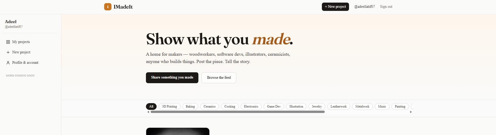

A showcase platform for makers — woodworkers, software developers, illustrators, ceramicists, and anyone else who builds things. Each project pairs an image-led cover with a long-form Markdown write-up of the work behind it, and a creator's full set of projects becomes their portfolio.

ImadeIt is a full-stack showcase platform for makers of any kind, whether that is woodworking, software, illustration, ceramics, or anything else someone builds. The site has two main views: a visual grid for browsing projects at a glance, and a detail page for each project where the creator can write up the story behind it with text and images.
The app is built with Next.js and React on the frontend, written in TypeScript, and styled with Tailwind CSS. The backend uses a Postgres database hosted on Supabase, which also handles file storage for project images. Users sign in with a magic link sent to their email instead of a password, and once signed in they get a dashboard where they can create, edit, and delete their projects, set each one to Published, Unlisted, or Draft, and edit their profile. Other users can browse projects, leave threaded comments, and the site tracks views per project once per day per visitor.
One of the main ideas behind the project was to keep security in the database rather than relying on the app to enforce it. Postgres has built in rules that decide who is allowed to read or change each row, so even if a request bypassed the website and hit the database directly, it would still be blocked unless the user is the owner of that row. The same approach applies to comments and file uploads, so the app stays secure without the frontend needing to police every action itself.